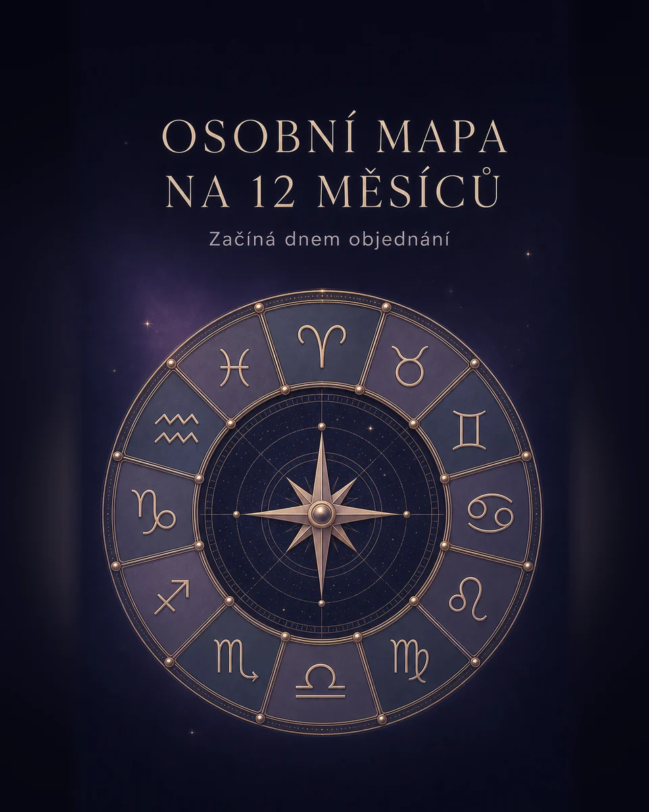

Ráno začni jednoduše
Dnes se vyplatí nechat věci dozrát. Největší posun přijde ve chvíli, kdy přestaneš tlačit na okamžitou odpověď.
- Zaměření: klid, vztahy, pracovní rytmus
- Další krok: vybrat jednu věc, kterou dnes dokončíš
Tarot, horoskopy, numerologie, sny i osobní výklady — vyber si cestu, která je ti právě blízká.
Vyber si cestu podle toho, co právě řešíš. Každá vede rovnou ke konkrétnímu nástroji.
Otoč kartu a vezmi si krátký podnět k zamyšlení. Zdarma, bez registrace a za pár sekund.
Žádný dlouhý formulář před prvním výsledkem. Začni tím, co právě potřebuješ vyřešit.
Rozhodnutí, vztah, sen nebo dnešní energii. Nemusíš znát žádné odborné pojmy.
Rychlý výklad je zdarma a bez registrace. Uvidíš ho hned po své volbě.
Bezplatný profil uloží vybrané výklady. Premium přidá hloubku a historii.
Nejdřív si službu vyzkoušíš. Profil a předplatné dávají smysl až ve chvíli, kdy se chceš k výkladům vracet.
Profil je zdarma · Premium zrušíš kdykoliv · Otevřít celý ceník
20 stran osobního výkladu pro jednu konkrétní otázku. Zaplatíš jednou a PDF ti přijde e-mailem.

To nejdůležitější o prvním výkladu, soukromí a předplatném.
Ano. Tarot ano/ne si vyzkoušíš zdarma a bez registrace. Profil potřebuješ až pro ukládání výkladů a další osobní funkce.
Datum, čas a místo narození používáme jen pro výpočet osobních výkladů. Podrobnosti najdeš v zásadách soukromí.
Ano. Předplatné zrušíš ve svém profilu a přístup zůstane aktivní do konce zaplaceného období.